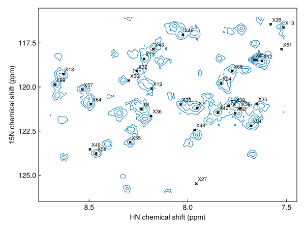

Register a peak list onto a spectrum
A peak list made for one spectrum rarely lines up exactly with another, because of differences in referencing, temperature or sample conditions. This applies to a list carried over from an earlier spectrum of the same sample, and even more to one predicted from assigned chemical shifts. register! finds the single offset that best matches the list to the observed peaks, and moves the list by it. register returns a moved copy instead.
using NMRTools, CairoMakie
spec = exampledata("2D_HN")A list from the BMRB
predicted = peaklist(exampledata("BMRB_ubiquitin"), "H", "N")
moved = register(predicted, spec)[ Info: Peak list shifted by -0.231381, 0.278222 ppmThe offset applied is logged. See Assigning ubiquitin from the BMRB for a full example.
A list from another spectrum
A list picked in one spectrum can be registered onto another, for example the next point of a titration:
series = exampledata("2D_HN_titration")
pks = detectpeaks(series[1]; snr=20, sign=:positive)
moved = register(pks, series[end])
fig, ax, _ = nmrplot(series[end][7.5 .. 8.7, 116 .. 126]; title="")
nmrplot!(ax, filter(p -> 7.5 < ppm(p, 1) < 8.7 && 116 < ppm(p, 2) < 126, moved))[ Info: Peak list shifted by 0.00243913, 0.0213111 ppm
A saved list
Load the list with loadpeaks first:
pks = loadpeaks("peaklist.csv")
register!(pks, spec)Limiting the search
Every offset within maxshift (by default 10% of the spectral width) is tried. Give maxshift in ppm, one value per dimension, to narrow the search, or 0 to hold a dimension fixed:
register!(pks, spec; maxshift=(0.3, 2.0)) # at most ±0.3 ppm ¹H, ±2 ppm ¹⁵N
register!(pks, spec; maxshift=(0.3, 0)) # shift ¹H onlyHow the offset is chosen
Each candidate offset is scored by how much signal lies under the shifted peaks. Absolute intensities are used, so negative peaks count as much as positive ones, and the score grows only logarithmically with intensity, so a single strong peak cannot outweigh many weaker matches. The best offset is refined to a fraction of a point.
Only a uniform translation is applied; individual peaks are not moved. Use findpeak on each registered peak to snap it to the nearest maximum:
snapped = [findpeak(series[end], ppm(p); label=label(p)) for p in moved[1:3]]3-element Vector{Peak{2}}:
label x (ppm) y (ppm) lwx (Hz) lwy (Hz) intensity
X1 7.66037 118.432 12.22 12.8858 401937.0
X2 7.66037 118.432 12.22 12.8858 401937.0
X3 6.80868 111.571 27.5186 30.3987 367193.0Higher dimensions
Registration works in any number of dimensions, as long as the list and spectrum have the same number:
register!(peaklist(shifts, "H", "N", "CA"), exampledata("3D_HNCA"))In a pipeline
loadbmrb(17769, H1, N15) |> register(spec) |> savepeaks("bmrb.csv")